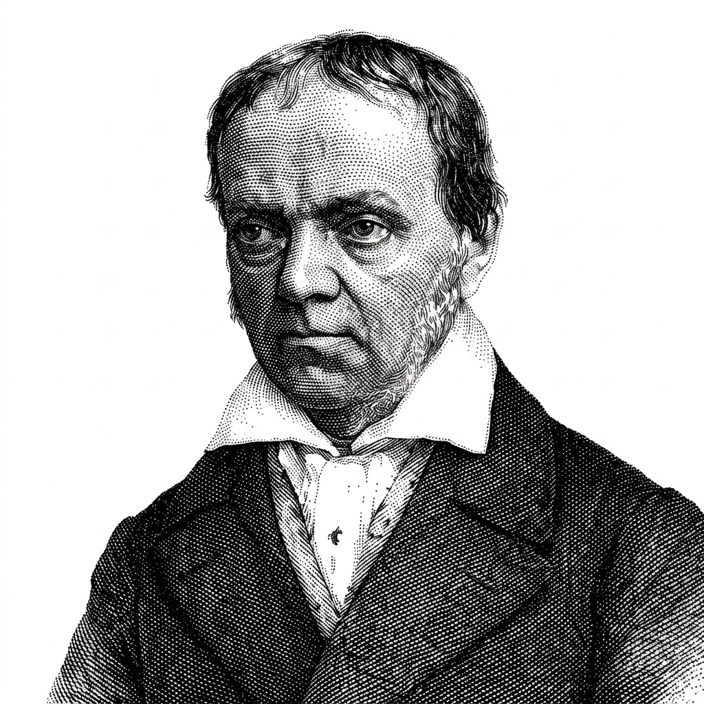

Layout
01 / 10
The 62/38 Split
Divide a two-column layout by φ instead of in half: content at 62 percent, sidebar at 38. The asymmetry says which column leads without a heavier border or a second color.
Balance by proportion, not by eye.
A ratio of about 1.618 that divides a line so the small part relates to the large as the large does to the whole. Designers use it to size columns, type scales, and crops that feel settled — as long as it stays a tool, not a rule.

Euclid defined the “extreme and mean ratio” in the Elements around 300 BC. Luca Pacioli’s De divina proportione (1509), illustrated by Leonardo da Vinci, gave it an aura of the sacred, and Martin Ohm named it the golden section in 1835. The ratios of consecutive Fibonacci numbers converge on the same value, φ ≈ 1.618.
Claims that the Parthenon, the nautilus shell, and famous logos are built on it are mostly folklore; George Markowsky’s 1992 review measured the best-known examples and found few hold up. What survives is practical: a proportion that divides space into unequal parts that still read as related.
Split a length so the larger part is to the smaller as the whole is to the larger. The result, φ ≈ 1.618, produces divisions that feel deliberate rather than arbitrary — a 62/38 split instead of 50/50 or 70/30.
a / b = (a + b) / a = φ ≈ 1.618
Divide a two-column layout by φ instead of in half: content at 62 percent, sidebar at 38. The asymmetry says which column leads without a heavier border or a second color.
Multiply a base size by φ for each step — 16, 26, 42, 68 — and every heading relates to body text by the same proportion. Many teams soften it to 1.25 or 1.333 for tighter screens.
A rectangle with sides in the ratio φ can be cut into a square and a smaller golden rectangle, again and again. The nested squares make a ready-made grid for hero blocks and card layouts.
Crop images to a φ rectangle, roughly 8:5, and place the subject on the line that divides the frame by φ rather than dead center. It sits close to the rule of thirds, a little tighter to the middle.
A spacing scale built on φ grows fast: 8, 13, 21, 34. Fibonacci numbers give the same rhythm in whole pixels. Use it for gaps between sections, not for every margin inside a component.
The Parthenon, the nautilus, and the Apple logo are routinely drawn with spirals that fit only if you squint. Markowsky measured the famous examples in 1992 and found few hold. Use φ because it works on the page, not because nature demands it.
Interfaces are systems of many small parts, and φ rarely survives contact with a 12-column grid, an 8-point spacing scale, or a fixed viewport. If forcing the ratio breaks alignment, alignment wins.
Studies from Fechner in 1876 onward found only a mild preference for golden rectangles, and later replications found less. What people reliably prefer is a proportion that is clearly unequal yet related — which φ delivers, and 3:2 or 5:3 deliver nearly as well.
Generated layouts can apply a ratio system everywhere at once; the risk is applying it where alignment matters more.
A model that composes a layout can be told to prefer φ-based splits and a modular type scale, and apply them consistently across hundreds of screens. Ask it to justify each proportion, and reject it where the grid breaks.
Image tools overlay golden spirals on anything, and the overlay always fits because it is scaled to fit. Treat a spiral as decoration, not evidence, and measure the underlying proportion instead.